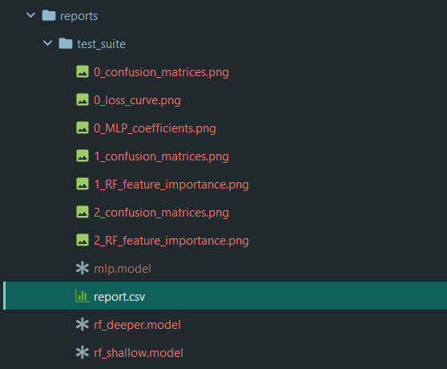

Test suite¶
This package also comes bundled with a handy tool called the test suite. For example, if you want to compare several algorithms, or several different configurations of a same algorithm, you can do so directly by defining a test suite configuration file. Included in this repository is the test_suite_example.json file which shows an example of such a configuration. Let’s look at it here:
{
"report_directory" : "test_suite",
"tests" : [
{
"type" : "mlp",
"hidden_layers" : "28 28 14",
"max_iter" : 100,
"verbose" : true,
"save" : "mlp.model"
},
{
"type": "rf",
"trees" : 10,
"depth" : 5,
"save" : "rf_shallow.model"
},
{
"type": "rf",
"trees" : 20,
"depth" : 10,
"save" : "rf_deeper.model",
"report_directory" : "test_suite_does_not_matter"
}
]
}
In the first line is the first required element : report_directory,
which is the folder name of the report you wish to create.
Note
If you enter a report directory which already exists, it will be uniquified with an incrementing value.
This will create a folder in a new reports folder with all the results of the test run inside.
Next is the second required element : tests where all the test configurations live. It is an array of settings
of algorithms which you can run one after another in a single pass, and collect all the results in a single folder. The
parameters are exactly the same as in the algorithm parameters.
This particular test suite file runs three algorithms, one MLP and two Random Forests. When run with the command:
mnist-predict -ts test_suite_example.json
It runs all three algorithms one after another and creates an associated report folder:
And inside the report.csv file, you will find results and configurations
of all three algorithms for easy comparison.
Note
Saved models specified with the save keyword will also be saved in your report folder. However, if you want to
use static seeds, you need to specify it for every algorithm in the list
Warning
If you specify the same model name for all your algorithms’ save keyword, it will be overwritten by each
subsequent algorithm.